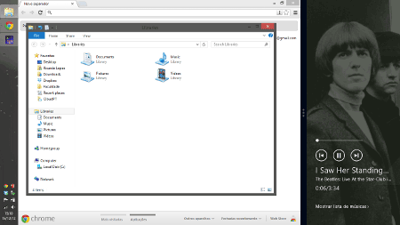
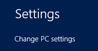

This is an archived blog post that is no longer listed. That's because this is an old post, from a previous blog I've had in this domain, years ago. I'm keeping this post up only in the interest of link preservation.
This post was originally posted on 23rd January 2015, which was already a repost of an older post first published on 25th November 2012. Here's the full post, including the 2015 disclaimer:
Disclaimer: This blog post was first published on the 25th of November of 2012. This means that most of its content might no longer be up-to-date. This was published in my previous blog, which has met an unfortunate end, and is being reposted now as an attempt to resurface some of the most popular posts that have been lost. After the very recent announcement by Microsoft about the new Windows 10, this seems to be an interesting time to bring back this particular post.

This post was supposed to be yet another Windows 8 review but, as I’ve gained experience with the latest Microsoft OS, I saw the potential for something a little more interesting. I’ve been using Windows 8 as the only OS in my main computer since it was officially released by Microsoft, so I might say I have some experience, now, to tell you a thing or two about it that you probably missed in other reviews. I’ve already used Windows, Mac and Linux as my primary OS (and I tend to change it quite frequently), and I find advantages and disadvantages in all of them. I’m pretty “agnostic” in most technology debates, and OSs aren’t an exception, so these thoughts aren’t distorted by fanboy opinions. I didn’t do a simple review not only because the Internet is full of it (really, I’m not even posting any links), but because my continuous usage of this new OS kept bugging me more and more about very specific details. So I’ll skip the typical suspense and just tell you my quick opinion about it, so I can discuss what I see as the most pressing issue: what Windows 8 could have been.
Firstly, I know many people don’t agree with me, but I actually think Microsoft changed the game with Windows 8 and the Surface. The notion of converging the laptop and tablet experience seems almost intuitive to me. As you might already know, tablets are the latest revolution in computing and are slowly throwing laptops to oblivion as once laptops did to desktop PCs (OK, I know it’s not that simple, but when we look at market shares there’s no doubt the landscape is changing). Tablets are also more portable than the thinnest ultrabooks, have a more intuitive and friendly input, don’t have the dreaded noisy fans, have better communication options and so on (I could go on listing the advantages of tablets over any laptop, but I guess I made my point already). So isn’t it silly that we’re still using them just as consumption devices (read: overpriced toys)? Is the great revolution in computing really only worth it for browsing Facebook and throwing some birds at evil pigs?
The answer, of course, is no. If these devices are so much better than their ancestors, then we must be able to switch and leave the old laptops behind. Some power users might not be able to do it, but that’s exactly what happened in the transition from desktop PCs to laptops anyway. Apple has been very careful in this matter: they have slowly improved iOS to meet more demands and updated Mac OS to be more iOS-like. They’re basically doing baby steps for converging the two OSs, cautious not to make a very risky move. I’m still very curious about what the conclusion of that convergence might look like. Microsoft, on the other hand, went all-in about the matter and evolved from a pure PC OS to a completely hybrid, both tablet-friendly and “traditional”.
In my opinion, and this might be controversial, Microsoft decided, for a change, to be the innovator and to push to the market a concept that is probably ahead of its time. They were so proud of their concept, they even build their own tablet/laptop hybrid just so they could show the full picture of their envisioned game changer product. This move is as refreshing as it is unexpected. So, as you can see by now, Windows 8 and the tablet/laptop hybrids approach have really caught my eye and promise to be a welcome revolution brought by an unexpected player.
So… what could possibly go wrong? Here are some of the details I’ve been struggling with lately.
Affordances
In interaction design, affordance is the quality of an element to display to a user how it is supposed to be used. Imagine a door with no signs and with equal handles on both sides. That’s an example of poor affordance, since you don’t know if you’re supposed to push it or pull it. A door with better affordance would have the handle only in the side where you needed to pull and probably a sign in each side displaying the correct action.
The Modern UI design aka Windows Store design aka Metro style design is, in my opinion, a nice UI that makes Windows Phone 7 and 8 look much more fresh and lively than the big guys iOS and Android. However, I’m not so sure about it in tablets and specially on regular PCs. One of its major advantages, the flat UI that strips down the unnecessary and focuses on content, is also one of its major flaws, because you’re also losing some important elements that weren’t just there for decoration. Don’t agree?

This image is showing two different elements from the same screen (not in their actual position, just next to each other in this picture for comparison). The one on the top is just a title with no action on click, and the one in the bottom is a button to a settings page (although we’re already in a settings panel, and another button in the same panel already points us to the Control Panel, another settings tool).
I could add more examples, but I hope you got the idea. Cleaning the UI is a very good idea, but you must do it with caution. “Make it as simple as possible, but not simpler”.
The best of two worlds?
One of Windows 8′s most ambitious promises is the convergence of desktop and tablet experiences. As I said, I’m a big fan of that concept and I believe that’s a trend to follow. But a concept is one thing, execution is another. My ideal use case would be something like:
I pick my tablet for working on the go. Since I don’t have paperwork nor a cumbersome laptop to carry, travelling with everything I need for work (just a tablet) is easier than ever. In those free times I can just turn on my tablet and browse my favourite websites, check my email and so on. When I get to my office I just link the Bluetooth keyboard and mouse and the HDMI display, start the traditional environment and fire up the MS Office suite, the IDE, etc.
Next day I decide to do some work at a coffee shop, so I just bring the tablet and a keyboard (a Surface keyboard would add no bulk to the pack, and a keyboard dock like what we see in Asus’s offerings would, in a worst case scenario, make me feel like I’m carrying a thin netbook).
When going to meetings, presentations or others I simply carry the tablet and use it with the onscreen keyboard, since I won’t be typing long sequences of text. In between, I think about my laptop and wonder when was the last time I used that heavy, noisy and awkward machine.
This use case is what I think when I see new hybrids in the market running full-blown OSs in a tablet form and when I hear Microsoft state how Windows 8 promises to deliver the best of both worlds. Unfortunately, that’s not what’s happening.
Firstly, Windows RT, a dumbed-down version of Windows 8 developed to run on ARM processors, miserably fails to live up to that promise, as you won’t be able to run legacy apps in it (read: you can’t install typical desktop applications, like the ones you absolutely must have for your job).
Also, when using a tablet with no mouse or keyboard, this ideal vision means not interacting with the traditional desktop and its windows, as they’re not the most touch friendly interfaces you’ll see. So it’s too bad that actions such as file management and configuring some settings have to be done in the desktop environment. I can’t help but think that Microsoft’s tight schedule for Windows 8 left many holes in the OS, and this lack of support for the continuous use of the tablet environment shows many of them.
These holes in the OS aren’t an exclusive of the tablet interface. As an example, in the desktop mode hitting the Networks taskbar icon brings a panel in line with the new design, but hitting the Sound or Power taskbar icons still brings the old style popup. Also, when using the desktop environment, the Charms bar has close to no functionality (but it still shows up when hitting non-configurable hot corners). There are many more rough corners that still need to be polished if this is to look like a finished product.
Finally, the integration of these two poorly-implemented worlds is nothing but disappointment. If you like a Metro application, you can’t run it as a window in the desktop environment (nor can you go full-screen in most desktop applications). If you open a file in one of the environments, the only way to move it to the other environment is to open it again manually using another application. The only way to see two Metro apps at once (or any Metro app while using the desktop interface) is by snapping one of them to the left or right of the screen. However, you have no control of the size of each app, and you can’t have two documents side by side, since the distributed space isn’t 50%-50%, but more like 75%-25%.
Apps, apps, apps
At the end of the day, what really matters is the applications. That’s why most users prefer Mac OS or Linux over Windows, but when you look at market shares that’s not what it looks like. However, with this new OS Microsoft seems to be trying to get rid of its huge market advantage.
As I’ve stated before, there’s not much integration between the two different environments of Windows 8. So, while you have a huge collection of legacy apps in the traditional one, you’ll feel the emptiness of options in the newest one. If desktop apps could integrate with the tablet mode this wouldn’t be such a big issue, because we’d have something to cover that emptiness while the new apps ecosystem was being developed. But we don’t, so if you’re like me you’ll probably want to make use of that awesome new environment, but will find no reason for it and eventually give up.
Things get pretty ugly if you consider Windows RT instead of 8, because it also has a desktop mode but lacks the support for legacy apps. So yes, the market leader that has built its success on top of its huge apps ecosystem has just started a new one from scratch and one of the versions of its newest OS doesn’t even support the old one.
Also, if this new desktop/tablet mix in the same OS serves as a “bridge” from the old ecosystem to the new, I can’t figure a simple reason for Microsoft to launch the Surface with RT before launching the Surface with 8. They basically launched a device with virtually no ecosystem and waited to later launch a similar device with support for all Windows applications. That’s like trying to build a whole village in a desert island and only later building a bridge to it. I wonder how much has Microsoft lost with this new, unpopulated village already.
Finally, if we look to the Metro apps that come with the OS, there’s also some aspects that make me think this could have gone a totally different way. The built-in calendar app couldn’t import all calendars from my Google account (in fact, it could only import the personal one), so it’s useless for me. The messaging app can’t send new messages if I’m set as invisible, and can’t get them from contacts that show up as offline, so this one’s also useless for me. Thanks to the poor integration between the two environments, I can’t get a mini player of the XBox Music app (only a snapped panel from top to bottom that shrinks my horizontal desktop area). These are just some examples of the poor job that leave us early adopters with little incentive to keep trying the new environment.
To sum up
Please don’t get me wrong: I love Windows 8′s concept and I share (more or less) Microsoft’s vision for the future of computers. If this was the typical review, I’d spend more time highlighting some good implementations and how I believe it’s the right direction. I might even have recommended the upgrade. However, my goal is to highlight what I find poorly implemented in such a great concept.
Thanks to this whole notebook/tablet hybrid concept, I’ve started to look at the latest ultrabooks as kind of obsolete devices. They don’t have touch screens, it’s impossible to use them while walking without looking awkward, and so forth. The same goes for all Apple’s notebook options (that’s probably the reason why most Apple fans don’t agree with this vision). However, after quite some time with Windows 8, I fear we don’t have a strong alternative yet. Yes, this is definitely an important step in that direction, but it’s still looking too immature, for now. Windows 8 seems to have suffered a lot from its tight schedule and, thanks to this incomplete effort, we now have a vision of what’s to come, but are left with a poor demo of it.
All in all, this could have been a new revolution in the way we use our computers. As it stands, it’s nothing but a glimpse of what that revolution might look like. Maybe they’ll get it right in an hypothetical Windows 9. After all, Microsoft is known for releasing great versions of Windows after disappointing ones, and disappointing versions after great ones (and so far, this pattern seems unchanged). Or maybe Apple will get it right first.
Update from 2024: Oh boy, this one really tested my commitment to link preservation. Anyway, glad to see that the newer Windows versions (10 and 11 at this time) don't look so unpolished.